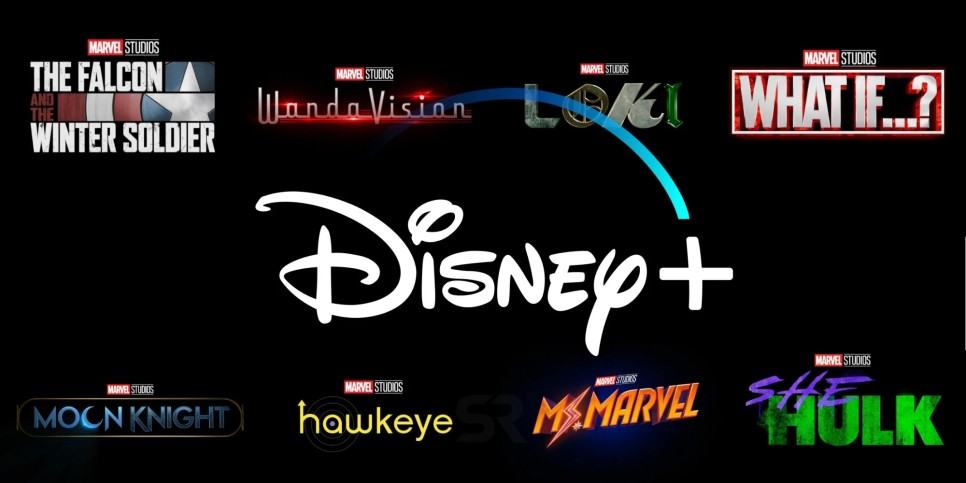
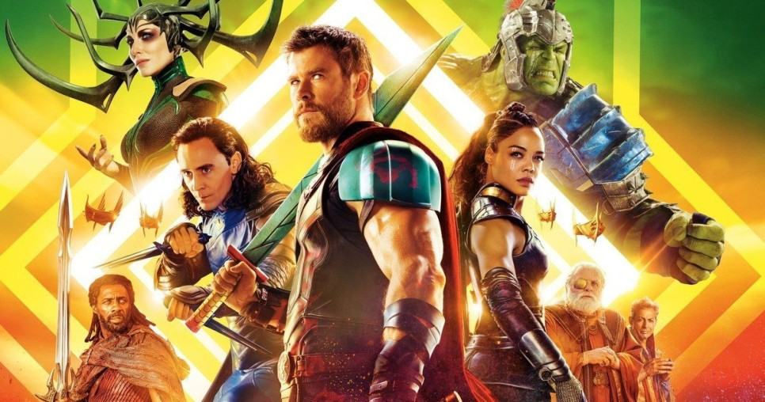
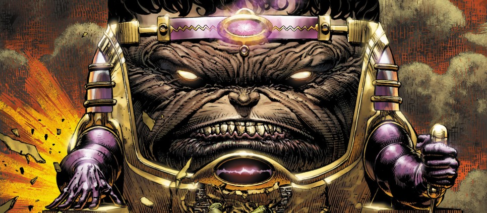
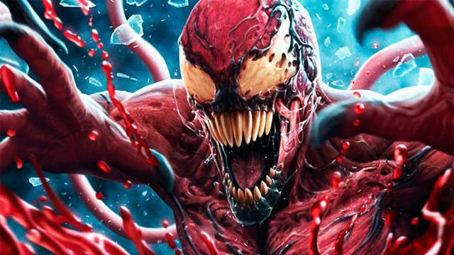

[블랙위도우]의 개봉일이 원래 [이터널스] 개봉일인 북미 11월6일로 밀리면서, 마블 시네마틱 유니버스 페이즈 4 영화들이
줄줄이 한칸 씩 밀어내기 식으로 밀렸습니다. 이에 따라 마동석 출연으로 화제를 모은 [이터널스]는 2021년2월에 개봉하게
되었는데요. 팬들은 이 때 같이 발표되지 않은 디즈니 플러스의 MCU 시리즈들의 향방에 대해서도 궁금해했습니다.
당장 올해 공개 예정이었던 [팔콘 앤 윈터솔져]와 [완다비전]이, 제작 종료가 얼마나 되었는지 알려지지 않은 상황이기
때문인데요.
그러나, 디즈니 플러스 프랑스가 필름 슬레이트를 공개하면서, 일정 부분 전망이 가능해졌습니다. 디즈니 플러스 프랑스는
[로키]와 [왓이프]를 2021 공개로, [호크아이], [미즈마블], [쉬헐크], [문나이트]를 2022 공개로 밝혔습니다. 예정일과 크게
다름이 없다는 점이 놀라운데요. 어느 정도 제작이 되었길레 연기가 없는 것인지는 모르겠으나, 건강과 안전을 챙기면서
예정대로 공개 되는 것이 최선이겠죠. 이렇게 됨으로써 [팔콘 앤 윈터솔져]와 [완다비전]이 제 때에 공개가 될 수 있을지가
제일 궁금해졌는데, 과연 어떻게 될지...

[완다비전]에 대한 팬들의 추측이 얼마나 거세냐면, 최근 엘리자베스 올슨이 본인의 SNS 계정에 올린 '전 세계의
[어벤져스] 팬들에게...'로 시작하는 영상에서, 자신의 정원에 딸기와 브로콜리를 심은 날을 말해주는데, 팬들은 이를
"딸기는 스칼렛 위치, 브로콜리는 비전을 의미하는 것이며, 숫자도 의미심장하다!" 라고 해석할 정도거든요. 일각에서는
디즈니 플러스의 MCU 시리즈들이 모두 원래대로 나올 방법을 관계자들이 모색하고 있다는 루머까지 나오고 있습니다.
과연 어떻게 될지...

[토르 3 라그나로크]의 환상적인 영상미를 가능하게 해준 것은 타이카 와이티티가 원작의 잭 커비 디자인을 상당 부분
반영해서인데요. 당연히, 타이카 와이티티의 감독 하에, 의상, 분장, 세트 등의 디자이너들이 엄청난 역량을 보여줬기에
그런 반영이 가능한 것이겠죠. 특히 의상 디자이너 Mayes C. Rubeo 는 타이카 와이티티의 또 다른 명작, [조조 래빗]
에도 참여를 해서, 콜라보를 이어갔습니다. 그리고 이 콜라보는 [토르 4 러브 앤 썬더]에서도 이어질 예정입니다. 매체
GWW의 보도에 따르면, Mayes C. Rubeo가 [토르 4 러브 앤 썬더]의 코스튬 디자이너가 될 것이라고 합니다. 이를
통해서 "[토르 4 러브 앤 썬더]도 [토르 3 라그나로크]의 분위기를 고스란히 이어가지 않을까" 라는 생각이 듭니다.

[앤트맨과 와스프]의 속편, [앤트맨 3(가제)]가 제작이 확정된 상황입니다. [릭 앤 모티], [지미 키멜 라이브] 등에서 각본가로
활약하며 다수의 코미디 프로그램 각본상을 수상한 작가 제프 로베네스가 [앤트맨 3]에 합류한 것이 확정되었는데요. 루머
전문 매체 GWW에 따르면, [앤트맨], [앤트맨과 와스프]의 각본을 공동 집필한 주연 배우 폴 러드도, [앤트맨 3]에 참여
한다고 합니다. GWW는 더 나아가서, 폴 러드가 쓴 각본에는 아이언맨과 어벤져스의 유명 악당 모독과 AIM이 악당으로
나온다고 하는데요, 이로써 모독의 [앤트맨 3] 메인 빌런 루머가 주목 받고 있습니다. 코로나19로 모든 히어로 영화들이
제작이 중단된 상황에서 현재로서는 사실 여부를 판단하기 어려운, 재밌는 루머겠죠. 하지만 모독이라면 어디든 언제든
나와도 좋은 MCU 빌런이라, 정말 [앤트맨 3]에 나올지 궁금하고, 나온다면, 기대가 됩니다. [앤트맨과 와스프]의 소니
버치의 '후원자'가 모독일수도...?

<베놈 2>가 현재 주요 촬영이 한창인 가운데, 이 영화의 추가 플롯 세부 내용이 표면화 되기 시자 했는데, 이는 정신병자
범죄자들을 위한 시설인 레프튼 크로프트가 도입됬다는 것을 알렸다고 합니다. 기자 다니엘 RPK의 특종 기사에서 연쇄
살인범인 클리투스 케사디(우디 헤럴슨)는 그의 범죄로 인해 사형 집행을 기다리며 이 레프튼에 수감될 예정이라고
하는데요. 제작 후 장면에서 2018년 <베놈>에서 언급된 이 시설은 이전 영화의 설정에 맞춰 뉴욕의 만화책 위치에서
캘리포니아로 옮겨졌습니다. 이 시설은 2014년 <어메이징 스파이더맨2>에서 투옥된 일렉트라를 탈옥시키기 위해 해리
오스본이 간 장소이기도 합니다. 케사디는 사형 집행 전에 배우 '나오미 해리슨'이 연기하는 동료 수감자인 프란시스
루이스 바리슨/슈리크와 함께 탈출해 새로운 범죄를 저지를 예정이며, 에디 브록(톰 하디)은 두 명의 살인자들이 각각
카니지와 슈리크로 변하며 이 두명의 살인자를 쫓을 예정이라고 하는군요.